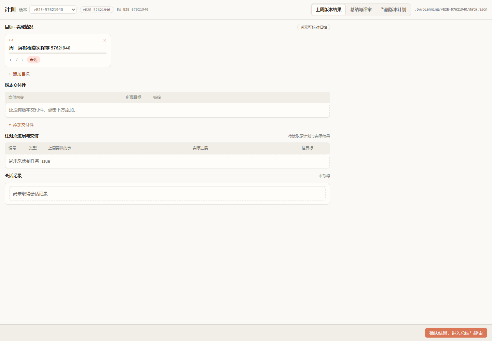
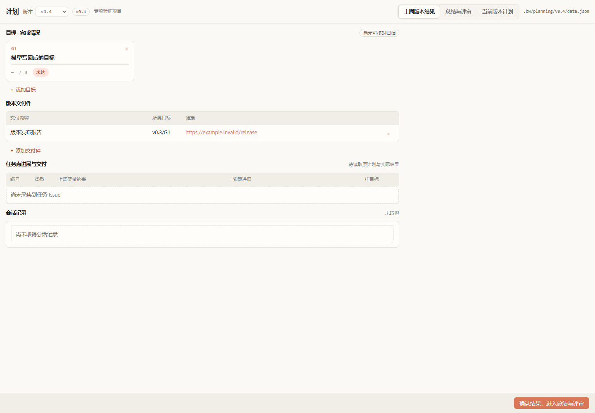
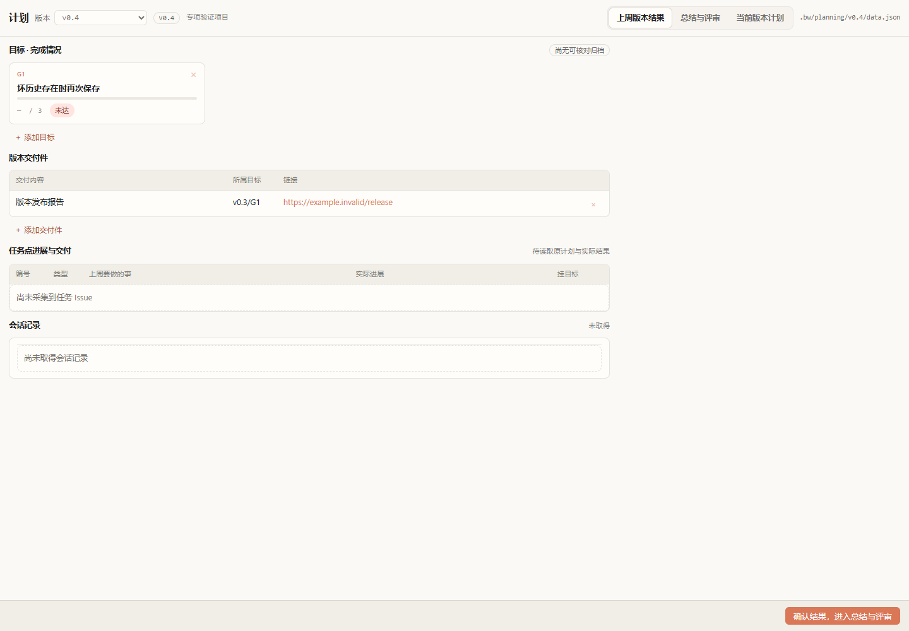
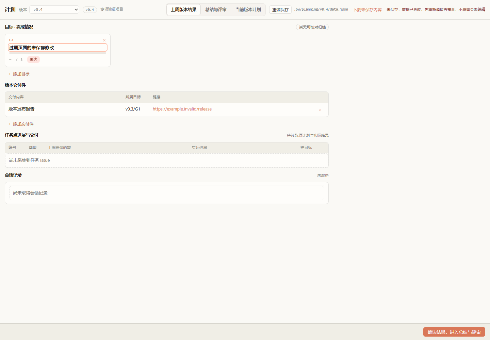
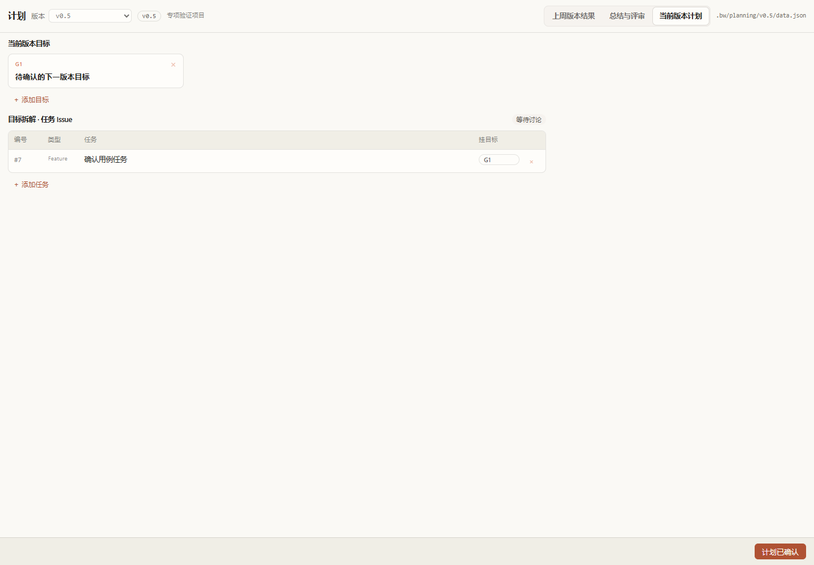
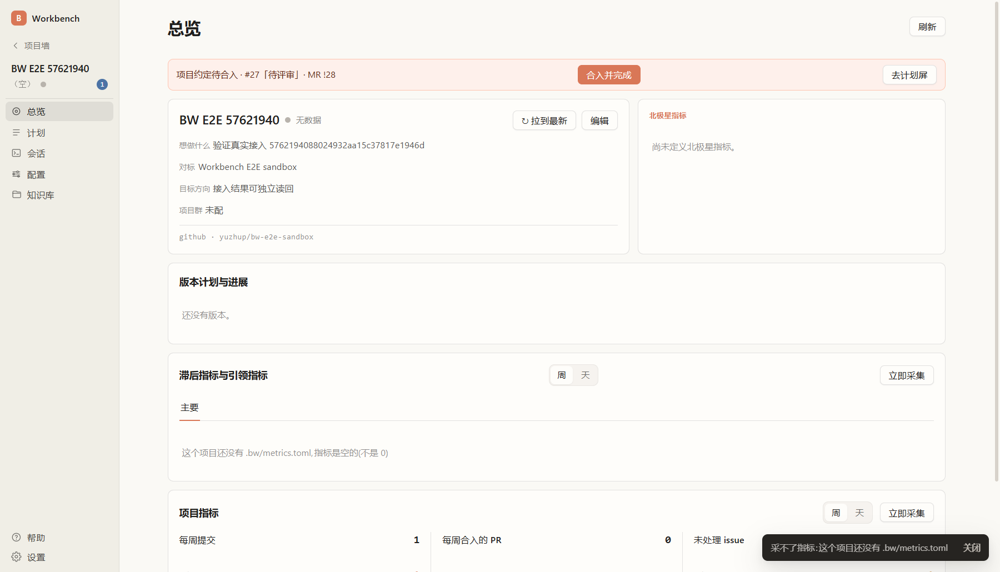
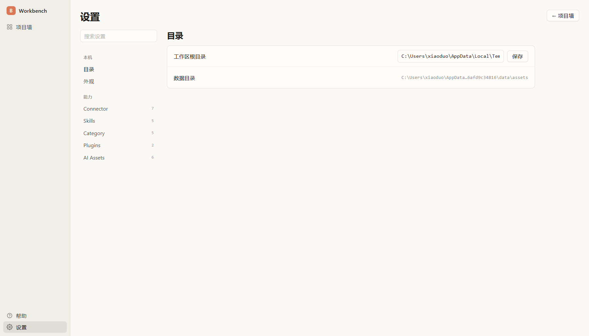

G1达成
[周一屏]需求功能交付，支持周一上午builder完成上周信息总结、本周版本规划，下午PL和builder计划对齐握手，输出交付件和周任务（需要整理会议纪要）
- 指标
- 约定验收项通过数（上午总结、本版规划成稿、下午 PL/builder 握手、纪要+交付件+任务 Issue 归档）
- 目标值
- 4/4 通过
- 交付件
- 版本验收报告（本页）
版本验收报告
| 编号 | 任务 | 目标 | 状态 | 备注 |
|---|---|---|---|---|
| #207 | 【v0.4|W38|G1】周一屏实战：BW 本周特性、指标与 E2E 验收 | G1 | 已完成 | |
| #176 | 【v0.4|W38|G1】规范收为 harness 系统提示词与 skill | G1 | 已完成 | |
| #217 | 【v0.4|W38|G1】新增采集脚本：统计使用周一屏的被管理项目数 | G1 | 已完成 | |
| #219 | 【v0.4|W38|G1】周一屏纪要：会议语音转文字并生成纪要 | G1 | 已完成 | |
| #218 | 【v0.4|W38|G2】补跑 2026-W38 周一屏并入库归档 | G2 | 已完成 |
路径 BW 打开沙箱项目触发写入 → bw-engine 示例独立读回自动化明细
期望 定版本计划（Workbench）唯一且关闭，执行目录是本项目 week-plan 常驻树，提示词含 bw/week-plan、周一屏与 planning.py 指引，updatedAt 不早于本次旅程开始
其他证据：weekplan-automation.json
路径 以 BW 开工同款 RPC 启动会话 → 等待新的 Claude 会话文件 → 读回内容 → 按归属标记清理进程
期望 出现不属于基线的新会话 jsonl 且非空；进程清理回执无残留
其他证据：weekplan-session.json、weekplan-session-jsonl-head.txt、weekplan-session-kill.json
路径 部署真实 Skill → planning.py 在常驻树起服务 → 无头浏览器修改目标 → 读回磁盘 data.json 与 git status
期望 磁盘 JSON 与页面输入一致；清理后常驻树恢复干净

其他证据：weekplan-data.json、weekplan-worktree-git-status.txt、weekplan-html-cleanup.json
路径 cargo 跑 planning_smoke 分发 → planning.py init 两个版本
期望 deployment.json 指向真实分发的 week-planning Skill 与已登记工作树
其他证据：deployment.json
路径 浏览器编辑目标与交付件 → 失焦保存 → 刷新页面
期望 JSON 落盘与页面输入一致，刷新后读回相同内容
其他证据：autosave.json
路径 planning.py update 写回同一版本 JSON
期望 页面不用刷新即显示模型写回后的目标
其他证据：model-candidate.json
路径 版本下拉在 v0.5 与 v0.4 间切换
期望 每屏只读对应版本的 JSON，互不串改
其他证据：versions.json
路径 会话补 progress 后进度条显示真数；清空 reading 后页面自动读回
期望 进度条回到 — 且无 aria-valuenow、宽度 0%；磁盘 JSON 同步变化

其他证据：unknown-honesty.json
路径 伪造 v0.1 坏 JSON → 重载 → 连续保存两次
期望 坏版本在下拉中禁用；当前版本保存不失败、状态不显示未保存

其他证据：bad-history.json
路径 另一写入方更新同一修订 → 过期页面继续编辑并保存
期望 保存被拒并提示未保存；磁盘保留另一写入方内容，页面输入不丢失

其他证据：conflict.json
路径 UI 确认结果 → 模型带伪造确认改写 → 人重新确认 → 会话命令确认评审 → 页面对话框确认计划
期望 每次确认后磁盘 actor:user；模型伪造值不落盘且确认全部重置；计划确认后三阶段齐全

其他证据：confirmation.json、forged-candidate.json
路径 接入项目 → 克隆远端仓 → 填写基础信息 → 完成接入 → 项目墙
期望 项目墙出现本项目名片，横幅含本次接入打开的 MR 编号；远端读单次网络抖动失败时按真人行为点刷新重试

路径 gh 读回 Issue/PR/分支内容；git 读回项目工作树
期望 项目约定 Issue 打开且挂 bw:status:inreview；bw/project PR 打开；远端与本地 project.toml 一致且含本次 run-id
其他证据：github-issue.json、github-pr.json、project-file.toml、git-worktrees.txt
路径 bw-engine 示例独立读回 Orca 的项目与自动化列表
期望 沙箱项目已登记，三条 Workbench 自动化各存在一条且均为关闭
其他证据：orca-automations.json
路径 关闭本次 PR/Issue → 删除远端 bw/project → 移除项目工作树与本地分支
期望 清理回执全为真；沙箱主仓、其余工作树与三条自动化保留
其他证据：remote-cleanup.json
路径 启动真壳进设置屏 → 修改工作区根目录并保存 → 杀壳进程 → 重启真壳 → 分别读回界面与 settings.toml
期望 重启后设置界面显示保存的目录；settings.toml 磁盘读回一致；重启前后证据齐全


其他证据：subject.json、initial-shell.log、initial-webview.json、settings-readback.toml、restart-shell.log、restart-webview.json、restart-readback.toml
生成于 2026-09-19 10:30:31 · 本报告由 version-report skill 生成：事实从 verify run 2026-09-19T10-30-26-309Z-68da36ae（profile pack）、出包产物 0.4.0（修订 9113867ae3b7）与 gh Issue 读回；完成确认与发版由人执行，本报告不代替。